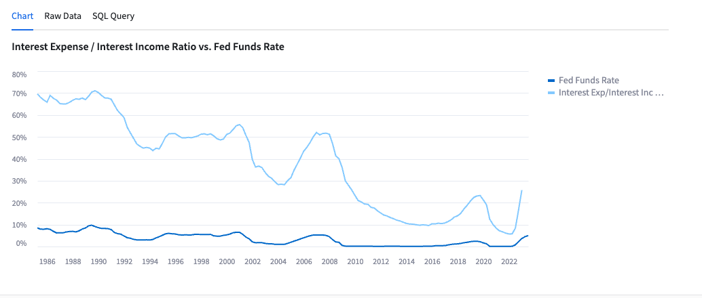

In this guide, we will review how to build a Streamlit App within Snowflake that allows you to easily demo Cybersyn's Financial Data Package data tables with charts built in Vega-Lite.
What is Streamlit?
Streamlit is a pure Python open source application framework that enables developers to quickly and easily write, share, and deploy data applications. Learn more about Streamlit.
What is Vega-Lite?
Vega-Lite is an open-source high-level grammar of interactive graphics. It provides a concise, declarative JSON syntax to create an expressive range of visualizations for data analysis and presentation.
What You'll Build?
An application on Streamlit within Snowflake that connects directly to a data listing acquired (for free) through the Snowflake Marketplace. This application allows users to quickly demonstrate usage examples from data in the Cybersyn Financial Data Package. This data specifically focuses on the US banking system and respective financials and performance.
What You'll Learn?
- How to access data from Snowflake Marketplace
- How to create and run Streamlit in Snowflake
- How to create VegaLite charts in Streamlit
Prerequisites
- To ensure you can mount data from the Marketplace, login to your Snowflake account with the admin credentials that were created with the account in one browser tab (a role with ORGADMIN privileges is required for this step). Keep this tab open during the session.
- Click on the Billing on the left side panel
- Click on Terms and Billing
- Read and accept terms to continue
Step 1: Accessing Data in Snowflake Marketplace
After logging into your Snowflake account, access Cybersyn's Financial Data Package in the Marketplace.
- Click the Get button on the top right box on the listing
- Read and accept terms by clicking Get again
- Note: This data listing is available for free, at no additional charge.
- The data is now available in your Snowflake instance, as the
FINANCIAL_DATA_PACKAGEdatabase under Data on the left hand side panel.

Step 2: Create a Database & Schema
- On the left side panel, click Data.
- Click the blue + Database button in the top right corner.
- Create a new database with a name of your choosing (eg.
FINANCIAL_STREAMLIT) for the Streamlit to live in. - Create a new Schema in the new database (eg.
FINANCIAL_STREAMLIT) with a name of your choosing (eg.STREAMLIT).
Step 3: Create a Streamlit
- On the left side panel, click Streamlit.
- Click the blue button, blue + Streamlit App button in the top right corner.
- Name your App (eg. Financial Streamlit)
- Select a Warehouse.
- Select the database and schema for your app. If you followed Step 2, select this database (eg.
FINANCIAL_STREAMLITandSTREAMLIT). - Click the blue Create button
- Delete all of the existing code.
Step 4: Copy the Python code from GitHub
- Click the button above which will direct you to our Financial Streamlit Python Setup file that is hosted on GitHub.
- Within GitHub navigate to the right side and click the ‘Copy raw contents' button on the top right of the code block. This will copy all of the required Python into your clipboard.
- Paste the Python code to the Streamlit code block in your newly created Streamlit in Snowflake.
Step 5: Create a Database & Schema
- Click the blue Run button on the top right corner.
- Wait for app to load.
- Note: If there is an error then try to refresh the page. If you continue to receive an error, please ensure that under Data you see the
FINANCIAL_DATA_PACKAGElisting in your databases.
- Note: If there is an error then try to refresh the page. If you continue to receive an error, please ensure that under Data you see the
You've successfully built the Cybersyn Financial Streamlit in Snowflake!
To see the Streamlit in the full window, click < Streamlit Apps on the top left and reopen the application you created (eg. Financial Streamlit).
All charts are setup to show a chart summary of the data, the raw data, and the SQL query to recreate the analysis.
Chart 1: Deposits by Size of Bank

- This chart allows the user to see the US bank deposits broken down by Top 25 Banks and All Others since January 1999.
- Data is sourced from FRED.
Chart 2: Share of Total Commercial Bank Deposits, Small Banks (Non-Top 25)

- This chart shows the share of deposits help by the banks that are not in the top 25 US banks by total deposits.
- Data is sourced from FRED.
Chart 3: Deposit Flows by Size of Bank, WoW

- This chart shows the WoW deposit inflows and (outflows) for banks.
- The chart can be filtered by date and the user can add in ‘Top 25 Banks' and ‘All Other Banks' to see the two breakdowns.
- Data is sourced from FRED.
Chart 4: Monthly Change in Bank Branches Since COVID-19

- This chart shows the monthly and cumulative change of bank branch openings and closures since January 2018.
- Data is sourced from FFIEC.
Chart 5: As of Dec ‘23: Banks w/ $10B Assets with Lowest FDIC Insured Deposits

- This chart shows the banks with lowest FDIC insured deposits as of December 2022.
- Data is sourced from FDIC.
Chart 6: Bank Failures by Quarter

- This chart shows the number of bank failures by quarter.
- Data is sourced from FFIEC.
Chart 7: Banking Industry Net Interest Income vs. Fed Funds Rate

- This chart shows net interest income by the bar charts against the left axis and the Fed Funds Rate in the line graph against the right axis since March 1985.
- Data is sourced from FRED.
Chart 8: Interest Expense / Interest Income Ratio vs Fed Funds Rate

- This chart shows the ratio of Interest Expense to Interest Income and compares it to the Fed Funds Rate since March 1985.
- Data is sourced from FRED.